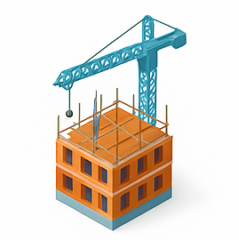

- خانه
- درباره ما
چرا مهندس من؟
پیدا کردن یک مهندس، پیمانکار یا استادکار قابل اعتماد برای پروژههای ساختمانی همیشه چالشی بزرگ است. از شناخت تخصص افراد تا اطمینان از کیفیت کار و انتخاب بهترین گزینه، سوالاتی هستند که بسیاری از افراد پاسخی برای آنها ندارند.
«مهندس من» دقیقا برای حل همین دغدغه متولد شد؛ ایجاد بستری شفاف، ساده و بدون واسطه برای دسترسی به برترین متخصصان صنعت ساختمان.
ما در این پلتفرم به شما کمک میکنیم تا با مشاهده دقیق سوابق، تخصصها و خدمات هر فرد، آگاهانه تصمیم بگیرید و مستقیماً با متخصص مناسب پروژه خود ارتباط برقرار کنید.
داستان ما از اجرا تا پلتفرم...
«مهندس من» حاصل یک ایده یکشبه نیست. داستان ما به ۱۶ سال حضور مستمر در خط مقدم پروژههای عمرانی، ساختمانی و تاسیساتی بازمیگردد. ما سالها در دل کارگاهها بودهایم، با چالشهای واقعی دستوپنجه نرم کردهایم و دقیقاً میدانیم یک پروژه موفق چه نیازهایی دارد. این سابقه طولانی به ما آموخت که بزرگترین خلأ در بازار خدمات مهندسی، عدم دسترسی شفاف و سریع به متخصصان متعهد و کاربلد است.
مهندس من چگونه کار میکند؟
ما مسیر را برای شما به سادهترین شکل ممکن طراحی کردهایم:
- جستجوی خدمات : بر اساس نیاز پروژه خود، دستهبندی مورد نظر را انتخاب کنید.
- بررسی و مقایسه: اطلاعات، سوابق کاری و خدمات متخصصان فعال در آن حوزه را بررسی کنید.
- ارتباط مستقیم: بدون هیچگونه واسطهای، با متخصص منتخب خود تماس بگیرید و همکاری را آغاز کنید.
حوزه خدمات مهندس من
پلتفرم ما تمامی مراحل یک پروژه ساختمانی، از صفر تا صد را پوشش میدهد. مهمترین خدمات ما عبارتند از:
- نقشه برداری : خدمات دقیق نقشهبرداری عمرانی، ساختمانی و زیرساختی با تجهیزات تخصصی.
- معرفی پیمانکاران و استادکاران : دسترسی به نیروهای اجرایی ماهر در بخشهای بتنریزی، اسکلت، تأسیسات، نازککاری و...
- طراحی و ترسیم نقشه ها : طراحی تخصصی نقشههای معماری، سازه، برق و مکانیک.
- طراحی نما و دکوراسیون داخلی : خلق فضاهای زیبا، کاربردی و اصولی.
- دریافت پروانه ساخت و پایان کار : همکاری با مهندسین و دفاتر دارای صلاحیت به جهت انجام خدمات مهندسی بمنظور دریافت پروانه ساختمانی و پایان کار
- خدمات اداری : بکارگیری از متخصصان انجام خدمات اداری جهت سهولت فرایند امور اداری ادارات مختلف بخصوص دستگاههای صدور سند و پروانه ساخت

پبمانکار و استادکار ساختمان
انجام نقشه برداری برای دریافت سند و سایر ادارات
مشاهده متخصصان مرتبط
ارزش های سازمانی مهندس من
ما برآن هستیم که ارزش هایی تعریف شده برای سازمان خود را برای اعتلای هرچه بیشتر خدمات بیش از پیش حفظ نماییم
- شفافیت : ارائه اطلاعات دقیق و کامل از متخصصان برای تصمیمگیری آگاهانه شما
- تخصص گرایی : ایجاد محیطی کاملاً حرفهای و متمرکز بر صنعت ساختمان
- ارتباط بدون واسطه : حذف دلالان و ارتباط مستقیم میان کارفرما و مجری